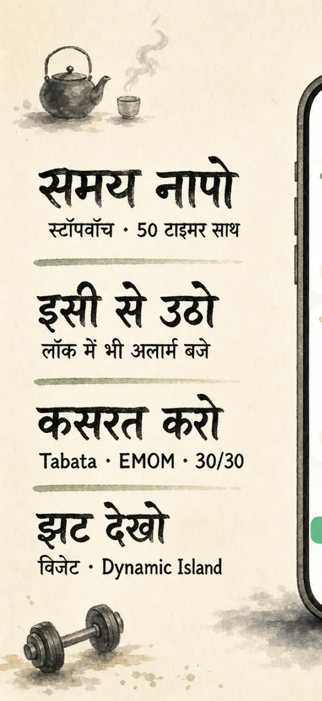
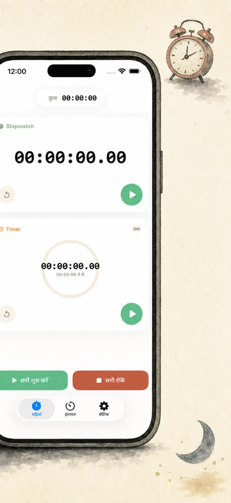
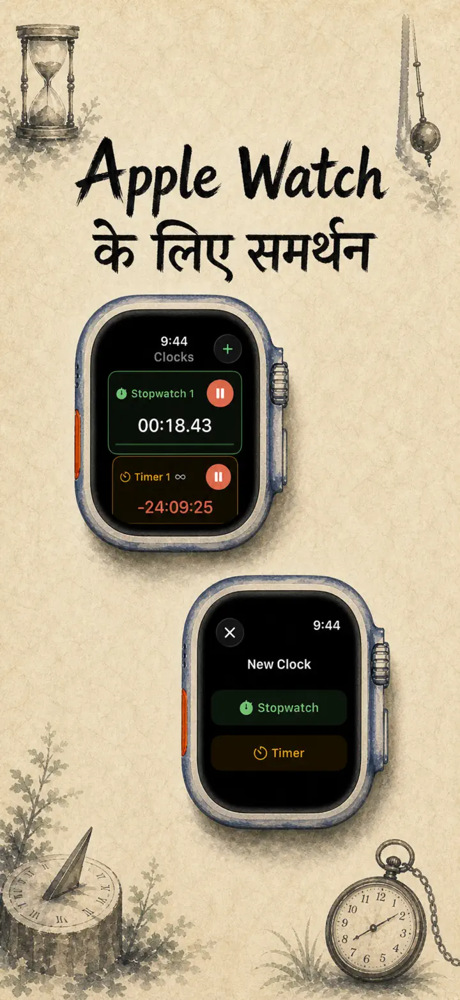
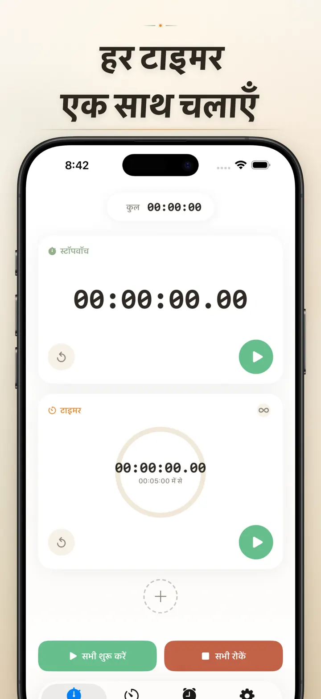
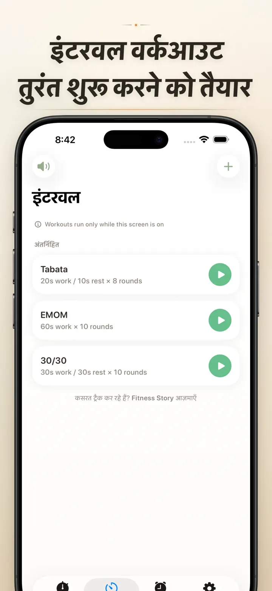
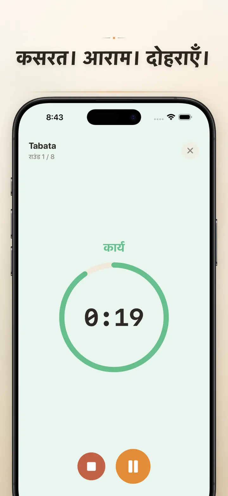
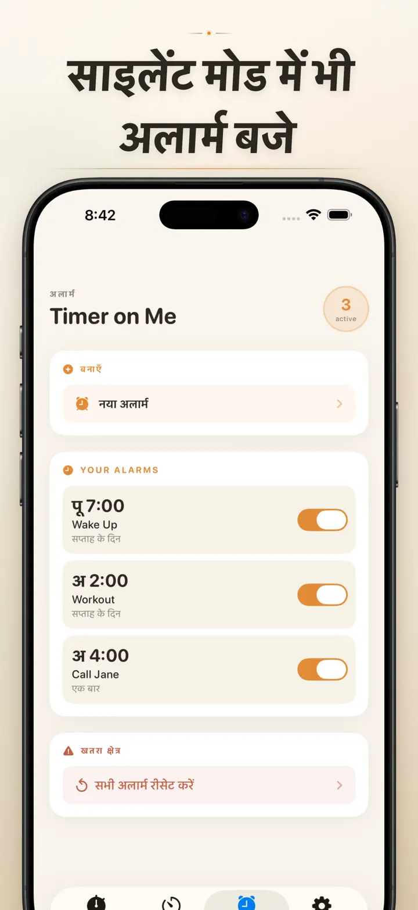

Timer on Me
टाइमर, अलार्म, स्टॉपवॉच, HIIT
अब तारीख अलार्म के साथ: किसी भी भविष्य की तारीख व समय के लिए एक बार का अलार्म, 50 टाइमर, HIIT व Tabata वर्कआउट, और Apple Watch सपोर्ट।
App Store से डाउनलोड करें
ऐप के बारे में
Timer on Me आपका मल्टी-टाइमर और स्टॉपवॉच है — iPhone, iPad और Apple Watch के लिए। एक साथ 50 इंडिपेंडेंट टाइमर, सटीक इंटरवल वर्कआउट और ऐसे अलार्म जो सचमुच बजते हैं — iPhone लॉक हो या ऐप बंद, तब भी।
अलार्म
- कस्टम लेबल और हफ्ते के दिनों के शेड्यूल के साथ वेक-अप और रिमाइंडर अलार्म
- AlarmKit से संचालित — iPhone लॉक हो या Timer on Me बंद, तब भी बजते हैं
- कॉन्फ़िगरेबल स्नूज़ (3 / 5 / 9 / 15 / 30 मिनट) या बिना स्नूज़
- बिल्ट-इन रिंगटोन चुनें या अपनी आवाज़ इम्पोर्ट करें
- डेडिकेटेड अलार्म टैब से एक टैप में ऑन/ऑफ
वर्कआउट और इंटरवल
- तैयार Tabata, EMOM और 30/30 प्रीसेट — दो टैप और चालू
- अपना इंटरवल एडिटर: काम, रेस्ट और राउंड्स मिनट-सेकंड में
- फुल-स्क्रीन वर्कआउट मोड, हर फेज़ पर रंग बदलता है, साइलेंट ऑप्शन भी
- सेशन के बीच में पॉज़, स्किप और रिज़्यूम — प्रोग्रेस नहीं जाएगी
APPLE WATCH
- असली नेटिव watchOS ऐप, सिर्फ फोन का मिरर नहीं
- कलाई पर कई स्टॉपवॉच और टाइमर एक साथ
- स्टॉपवॉच में सेकंड के सौवें हिस्से तक की सटीकता
- खुद के वॉच फेस कॉम्प्लिकेशन — एक टैप में स्टार्ट
- iPhone पास न हो तब भी अकेले काम करता है
एक साथ 50 टाइमर
- एक ही सेशन में 50 इंडिपेंडेंट टाइमर और स्टॉपवॉच
- एक-एक करके या ग्रुप में स्टार्ट, स्टॉप, रीसेट
- साइक्लिक राउंड्स के लिए ऑटो-रिपीट
- ज़ीरो के बाद भी टाइमर चलते रहते हैं — ओवरटाइम ट्रैक करें
- रंगीन प्रोग्रेस बार: 50% पर पीला, 10% पर लाल
- ड्रैग करके ऑर्डर बदलें, अपना नाम रखें
भरोसेमंद अलार्म
- AlarmKit: iPhone लॉक या ऐप बंद होने पर भी अलार्म बजते हैं
- Dynamic Island और Live Activity — एक नज़र में प्रोग्रेस
- होम स्क्रीन विजेट: छोटा, मीडियम, बड़ा
- बिल्ट-इन साउंड: घंटियाँ, पक्षी, विंटेज फोन
- चुनने से पहले टैप करके सुनें
- लंबे सेशन के लिए "स्क्रीन चालू रखें" मोड
कस्टमाइज़ और शेयर
- डेसिमल, टोटल और परसेंट दिखाएँ या छिपाएँ
- प्रीसेट सेव और ओवरराइट करें, एक टैप में वापस लाएँ
- CSV, JSON या प्लेन टेक्स्ट में एक्सपोर्ट
- साथियों, स्टूडेंट्स या कोच के साथ शेयर करें
iPhone, iPad और APPLE WATCH के लिए
- हर स्क्रीन साइज़ के लिए अडैप्टिव लेआउट
- iPad पर Split View
- 34 भाषाएँ
इनके लिए बढ़िया
- HIIT, Tabata, CrossFit और सर्किट ट्रेनिंग
- बॉक्सिंग, किकबॉक्सिंग और मार्शल आर्ट्स के राउंड्स
- Pomodoro, बोर्ड एग्ज़ाम, NEET, IIT और UPSC की तैयारी
- चाय, कॉफी, अंडा उबालना, दाल, रोटी और ओवन के समय
- योग, प्राणायाम, ध्यान और श्वास-अभ्यास
- प्रेज़ेंटेशन रिहर्सल और इंस्ट्रूमेंट प्रैक्टिस
- क्लासेस, वर्कशॉप और ग्रुप ऐक्टिविटी
- बोर्ड गेम और दोस्तों के साथ शामें
Timer on Me डाउनलोड करें और हर मिनट पर कंट्रोल पाएँ — जिम में, ऑफिस में या घर पर।
प्राइवेसी पॉलिसी: https://masawata.net/privacy-policy.html सेवा की शर्तें: https://www.apple.com/legal/internet-services/itunes/dev/stdeula/
स्क्रीनशॉट






Timer on Me
अब तारीख अलार्म के साथ: किसी भी भविष्य की तारीख व समय के लिए एक बार का अलार्म, 50 टाइमर, HIIT व Tabata वर्कआउट, और Apple Watch सपोर्ट।
App Store से डाउनलोड करें